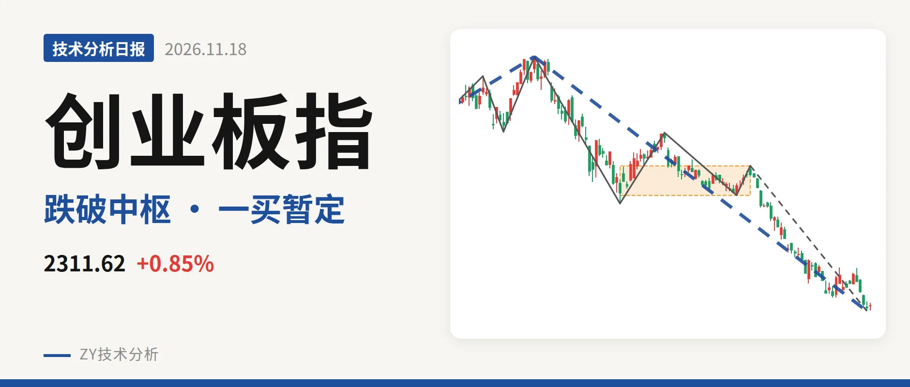
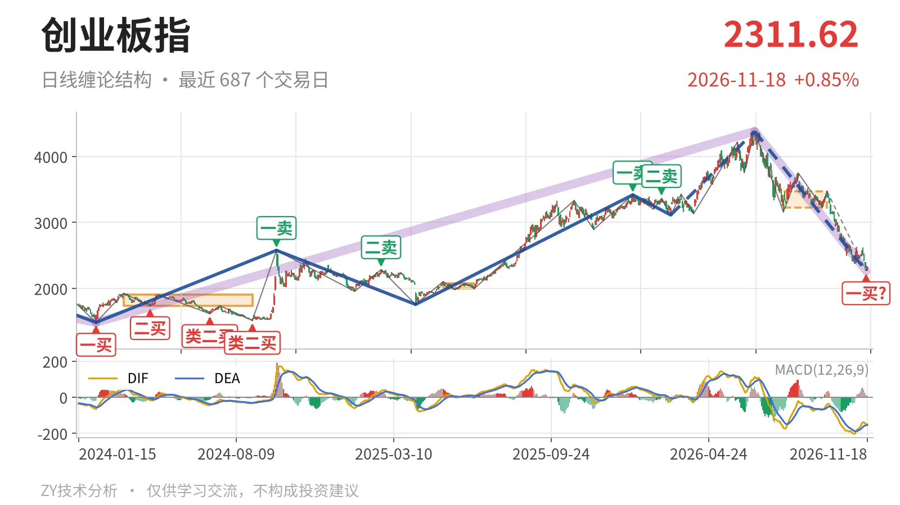
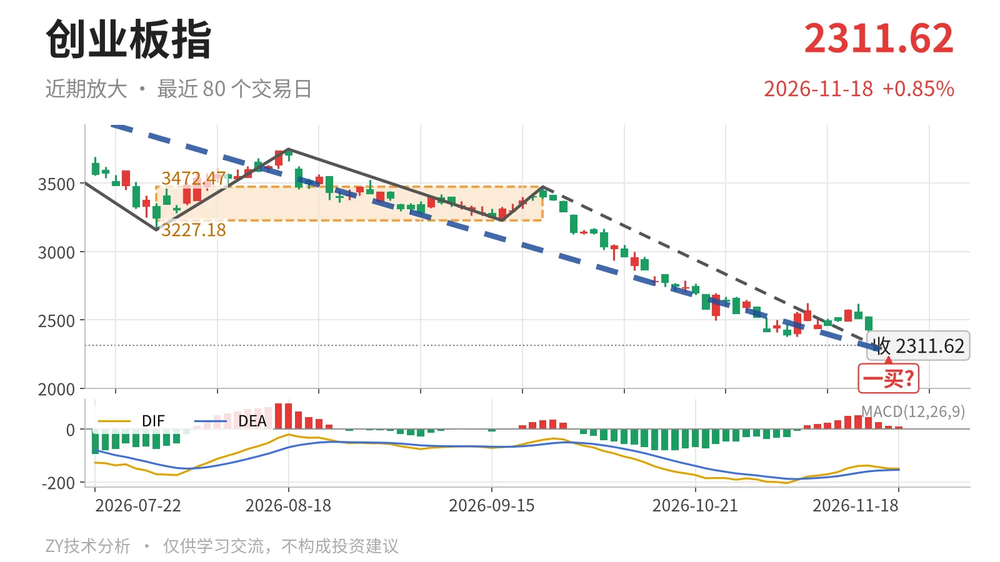

创业板指｜暂定一买后反抽，先看2283点

最近日线中枢 3227.18—3472.47点，收盘位于中枢之下
一句话：日线结构偏弱，暂定一买后反抽，先看2283点一线。
📉 走势结构：6月25日以来日线下跌段还在延续
更大级别上，2024年2月5日至2026年6月25日的上涨段仍没有结束，但6月25日以来的下跌段同样还在延续，已回落约48.3%。日线线段上，6月25日至11月17日的下跌线段从4380.41点跌至2263.74点，已经走出五笔，11月18日收于2311.62点，仍在该下跌段内部，没有结束结构。

🧭 中枢位置：跌破最近日线中枢，贴近更大中枢上沿
最近日线笔中枢为7月30日至9月22日的3227.18—3472.47点，尚在构建，但最新价2311.62点低于下沿约28.4%，该中枢已被向下破坏。更大级别线段中枢2022年4月27日至2023年8月4日为2122.32—2282.65点，最新价高于其上沿约29点，贴近但未进入中枢内部。当前位置在最近日线中枢下方，靠近下方线段中枢上沿。
🎯 买卖点：11月17日一买是暂定的
11月17日2263.74点出现日线笔级别一买，但所在下跌笔尚未走完，应视为暂定的一买，会随这一笔延续而变化。11月18日最低2265.76点未再创新低，最高2329.91点，收盘2311.62点，只是内部反弹，尚未成反向笔。3月9日3111.88点的线段三买之后虽创出4380.41点新高，但当前低点已跌破该买点，只对应3月9日至6月25日的上涨线段。

⚖️ 背驰：绿柱面积与DIF同步放大，暂无底背驰
取最近同向的两段日线下跌笔：8月18日至9月16日下跌笔，绿柱面积147，DIF低点-76.6；9月22日至11月17日下跌笔，绿柱面积1107，DIF低点-204.5。价格新低，绿柱面积放大，DIF低点也下移，属于力度增强，没有新低不新弱。9月22日以来的下跌笔还在延续，比较仍可能变化。11月18日DIF -150.3，DEA -154.6，柱8.7，DIF仍在零轴下。
🔎 关键位置观察：2283点与3227点之间仍是弱势结构
当前日线结构偏弱，原因是指数位于最近日线中枢下沿3227点下方，且DIF仍在零轴下。上方反抽先看2283点一线，即线段中枢上沿附近；若反抽回不到3227点上方，结构上构成三卖。若重新站上3227点，则6月25日以来的下跌更可能只是中枢扩展。下方2263点若被继续下破，9月22日以来下跌笔延续。在这些结构变化出现前，日线结构仍偏弱。
⚠️ 本文为基于公开行情数据的缠论技术结构记录，由程序自动计算并生成，仅供学习交流，不构成任何投资建议。市场有风险，投资需谨慎。